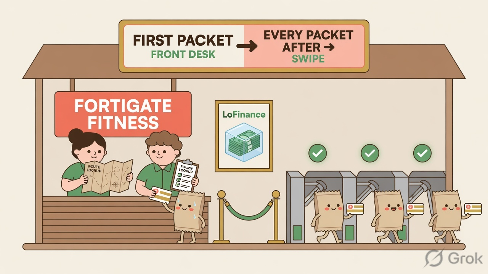
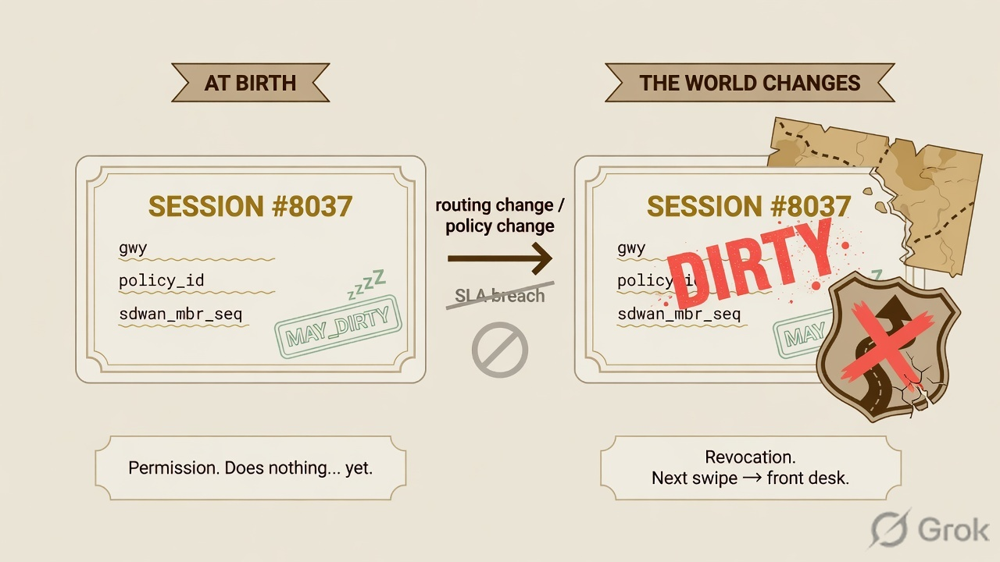
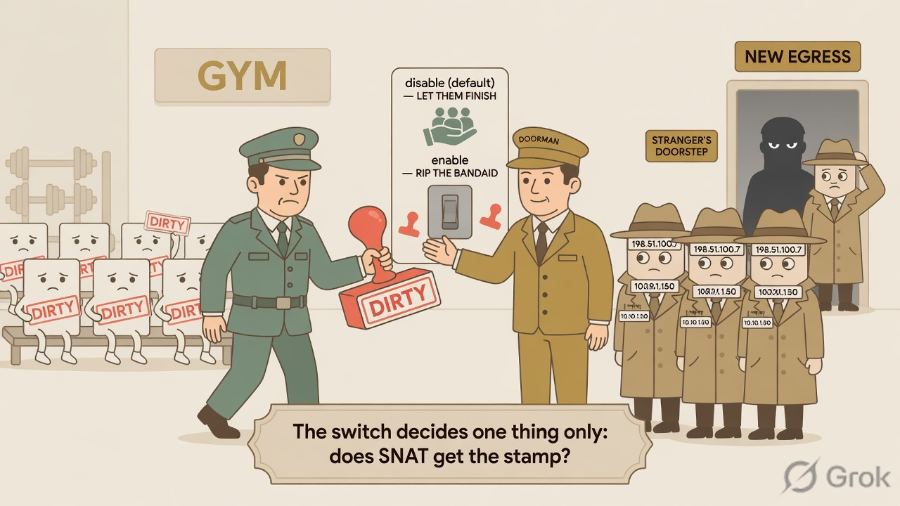

The gym is the firewall
Every session at LoFinance is a gym member. The building has exactly two ways in: the front desk (slow, thorough) and the turnstile (instant swipe). A packet only ever visits the front desk once — on the day its session is born.
- Front desk = first packet: full route lookup (policy routes → SD-WAN rules → FIB) and full firewall policy lookup. The verdict is engraved into the card:
gwy,policy_id,sdwan_service_id,sdwan_mbr_seq. - Turnstile = every later packet: swipe the card, session table only, no thinking.

Two stamps, two completely different meanings
| Stamp | When it appears | What it means | What it does by itself |
|---|---|---|---|
| may_dirty | At birth, when the session is created by a firewall policy | Permission. "This card may be revoked and sent back to the front desk — if the world ever changes." | Nothing. It sits dormant on almost every session, forever, unless an event fires. |
| dirty | At the event — routing table change or firewall policy change | Revocation. "On your next swipe, the turnstile rejects you. Front desk. Full re-check." | Forces the next packet to re-run both lookups — route and policy. The session then moves to the new best path, or is denied. |
dirty = the event: next packet re-runs BOTH lookups.

How the stamp actually fires
The chain the student built in Session 64, in one breath:
session info: proto=6 proto_state=01 duration=1842
state=may_dirty npu
dev=port2->port1 gwy=203.0.113.1/0.0.0.0
hook=post dir=org act=snat 10.10.1.50:51823->(198.51.100.7:51823)
policy_id=12 sdwan_mbr_seq=2 sdwan_service_id=3Read the flags line like a card inspection: may_dirty present = eligible for revocation. If an event had fired, dirty would appear beside it — and the npu flag means the session must first be pulled off the ASIC back to the CPU for its re-check.
The SNAT doorman & snat-route-change
When the firewall walks the session table stamping dirty, there is one desk it hesitates at: SNAT sessions. These members are wearing a borrowed identity — a public IP the far end negotiated with. Move them to a new egress and that identity changes; the far end has never met the new address and drops them silently. Escorting dead men to a new door.
| Setting | Mechanism (what the firewall does) | Consequence (what the user feels) | Nickname |
|---|---|---|---|
| set snat-route-change disable (default) | SNAT sessions are exempt from the dirty stamp on routing changes — they keep their cached route until the session expires naturally. | Long transfers and calls in flight are left to finish on the old path where possible. | "Let them finish" |
| set snat-route-change enable | SNAT sessions are stamped dirty like everyone else — next packet forces the full re-evaluation. | Immediate clean break; the session dies at the stranger's doorstep and the application rebuilds a fresh session on the new path. | "Rip the bandaid" |

The whole gym in four lines
2. may_dirty at birth = permission. dirty at the event = next swipe goes back to the desk, both lookups re-run.
3. Only routing changes and policy changes stamp dirty. SLA breaches stamp nothing — sick links strand sessions.
4. snat-route-change decides whether SNAT sessions get the stamp at all. Default disable = exempt, let them finish.